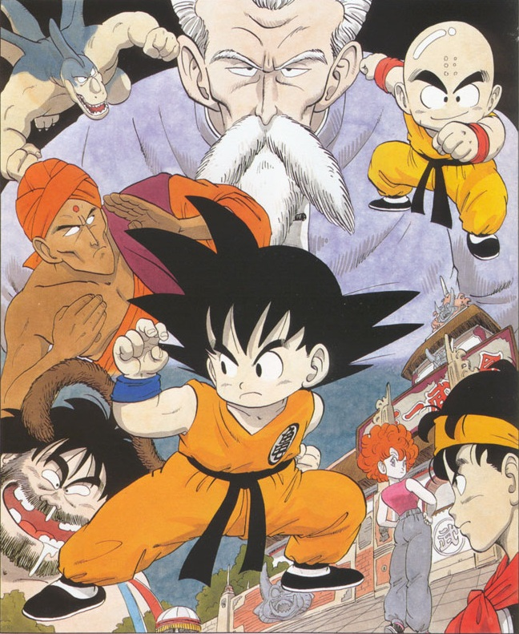
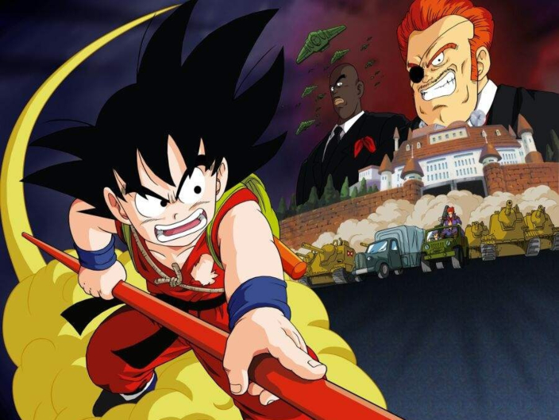
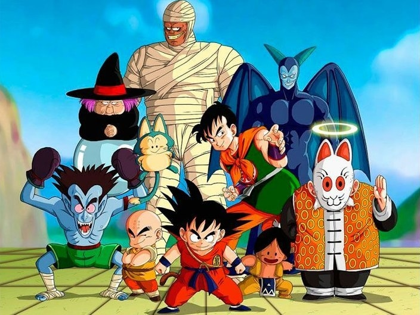
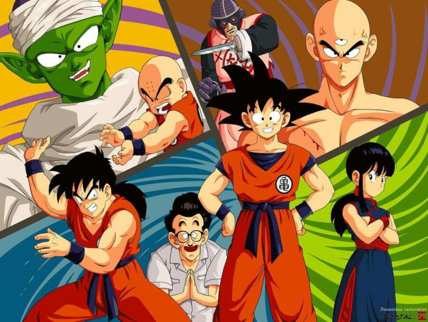
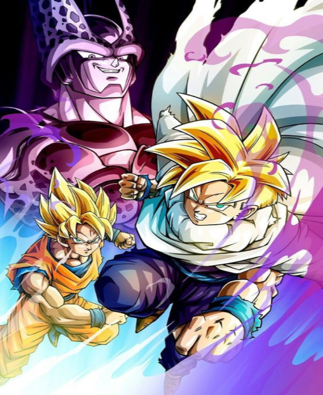
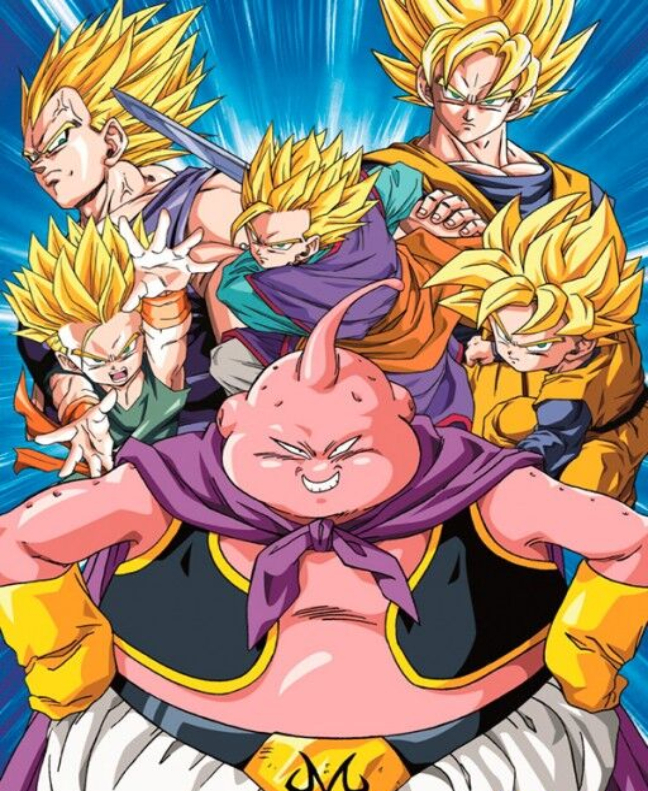
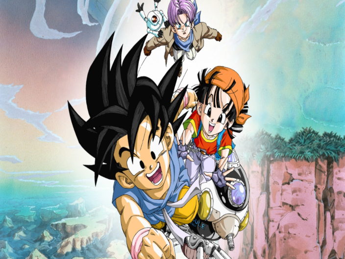
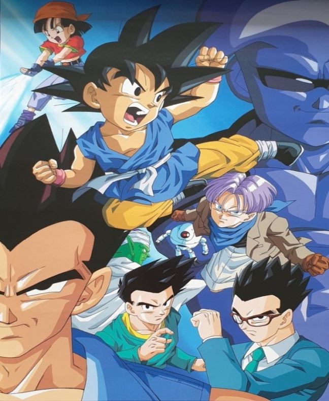
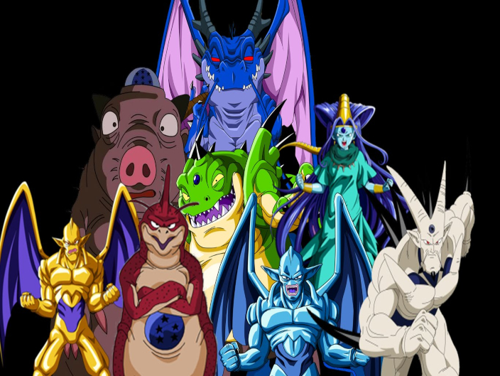
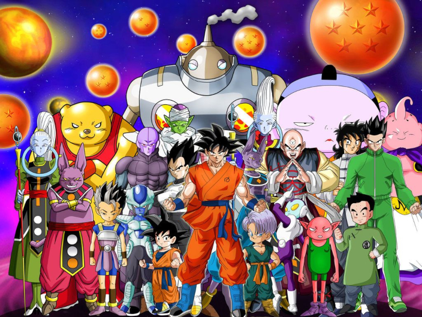

El 21° Torneo de las Artes Marciales
Cuenta con 15 episodios totales que van del número 14 al 28.
Lista de capitulos

Saga de El Ejército de la Patrulla Roja
Cuenta con 40 episodios totales que van del número 29 al 68.
Lista de capitulos

El Palacio de Uranai Baba
Cuenta con 14 episodios totales que van del número 69 al 82.
Lista de capitulosEl 22° Torneo de las Artes Marciales
Cuenta con 19 episodios totales que van del número 83 al 101.
Lista de capitulosSaga de Piccolo Daimaku
Cuenta con 31 episodios totales que van del número 102 al 132.
Lista de capitulos

El 23° Torneo de las Artes Marciales
Cuenta con 21 episodios totales que van del número 133 al 153.
Lista de capitulosSaga de Pilaf
| CAPITULO | NOMBRE | LINK |
|---|---|---|
| 1 | El secreto de la esfera del dragón | Capitulo1 |
| 2 | La búsqueda del emperador | Capitulo2 |
| 3 | La nube dorada de Roshi | Capitulo3 |
| 4 | Oolong, el secuestrador de niñas | Capitulo4 |
| 5 | El fuerte y malvado Yamcha vive en el desierto | Capitulo5 |
| 6 | Vigila las esferas del dragón | Capitulo6 |
| 7 | Ox-Satán en la montaña de fuego | Capitulo7 |
| 8 | La onda glaciar de Roshi | Capitulo8 |
| 9 | El truco especial del Jefe Conejo | Capitulo9 |
| 10 | Las esferas del dragón han sido robadas | Capitulo10 |
| 11 | El dragón ha sido llamado | Capitulo11 |
| 12 | Un deseo pedido al dios dragón | Capitulo12 |
| 13 | La metamorfosis de Gokú | Capitulo13 |
El 21° Torneo de las Artes Marciales
| CAPITULO | NOMBRE | LINK |
|---|---|---|
| 14 | El Rival de Gokú | Capitulo14 |
| 15 | La misteriosa niña Lunch | Capitulo15 |
| 16 | La cacería de piedras | Capitulo16 |
| 17 | Los repartidores de leche | Capitulo17 |
| 18 | Entrenando al estilo de Roshi | Capitulo18 |
| 19 | El gran torneo de artes marciales | Capitulo19 |
| 20 | ¿Podrá el duro entrenamiento ser puesto en práctica? | Capitulo20 |
| 21 | ¡Alerta Krilin! | Capitulo21 |
| 22 | ¡Yamcha contra Jackie Chun! | Capitulo22 |
| 23 | El horrible Guilan | Capitulo23 |
| 24 | El frenético ataque de Krilin | Capitulo24 |
| 25 | El terrible ataque aéreo de Nam | Capitulo25 |
| 26 | La fuerza Kame Hame al ataque | Capitulo26 |
| 27 | Gokú en graves aprietos | Capitulo27 |
| 28 | Gokú ha desaparecido | Capitulo28 |
Saga de El Ejército de la Patrulla Roja
| CAPITULO | NOMBRE | LINK |
|---|---|---|
| 29 | El río que podía moverse | Capitulo29 |
| 30 | El marciano y la patrulla misteriosa | Capitulo30 |
| 31 | Gokú creyó encontrarla | Capitulo31 |
| 32 | La fortaleza voladora desapareció | Capitulo32 |
| 33 | La leyenda del Dragón | Capitulo33 |
| 34 | El ejército listón rojo y su cruel comandante general | Capitulo34 |
| 35 | Suno, la pequeña niña de la aldea del norte | Capitulo35 |
| 36 | La batalla con el sargento metálico | Capitulo36 |
| 37 | Llegó el Ninja Púrpura | Capitulo37 |
| 38 | Cinco ninjas en contra de Gokú | Capitulo38 |
| 39 | El encuentro con el misterioso robot Nº8 | Capitulo39 |
| 40 | La pelea de Goku contra el temible Buyon | Capitulo40 |
| 41 | El último día en la torre de la fuerza | Capitulo41 |
| 42 | El inesperado secreto del Dr. Flappe | Capitulo42 |
| 43 | La casa de Bulma al oeste de la metrópoli | Capitulo43 |
| 44 | Gokú y sus amigos en terribles aprietos | Capitulo44 |
| 45 | ¡Cuidado! hay una trampa | Capitulo45 |
| 46 | El fracaso total de Bulma | Capitulo46 |
| 47 | Encuentran la casa de Roshi | Capitulo47 |
| 48 | El General Blue empieza a atacar | Capitulo48 |
| 49 | Cuidado con el enemigo | Capitulo49 |
| 50 | El secreto de los piratas | Capitulo50 |
| 51 | El guardián de las profundidades | Capitulo51 |
| 52 | ¡Grandioso! Hemos encontrado el tesoro | Capitulo52 |
| 53 | La cueva siniestra | Capitulo53 |
| 54 | El escape | Capitulo54 |
| 55 | Camino a Villa Pingüino | Capitulo55 |
| 56 | Arale viaja en la nube voladora | Capitulo56 |
| 57 | Arale contra el General Blue | Capitulo57 |
| 58 | La Tierra Sagrada | Capitulo58 |
| 59 | Tao PaiPai, el exterminador más famoso del mundo ha llegado | Capitulo59 |
| 60 | La fuerza Kame Hame contra Tao Pai Pai | Capitulo60 |
| 61 | La torre del maestro Karin | Capitulo61 |
| 62 | El beneficio del agua ultra sagrada | Capitulo62 |
| 63 | Gokú contraataca | Capitulo63 |
| 64 | El último Tao Pai Pai | Capitulo64 |
| 65 | ¡Vamos Gokú! Comienza la pelea | Capitulo65 |
| 66 | El último esfuerzo de la Patrulla Roja | Capitulo66 |
| 67 | El comandante de la patrulla roja muere | Capitulo67 |
| 68 | La última esfera del dragón | Capitulo68 |
El Palacio de Uranai Baba
| CAPITULO | NOMBRE | LINK |
|---|---|---|
| 69 | ¿Quién es Uranai Baba? | Capitulo69 |
| 70 | El ataque de los cinco guerreros | Capitulo70 |
| 71 | Una batalla sangrienta y mortal | Capitulo71 |
| 72 | La pelea de Gokú en el baño del diablo | Capitulo72 |
| 73 | ¿Qué es el resplandor mortal del diablo? | Capitulo73 |
| 74 | El misterioso quinto participante | Capitulo74 |
| 75 | ¿Qué? ¡El poderoso adversario resultó ser un viejo amigo! | Capitulo75 |
| 76 | La verdadera identidad del hombre enmascarado es... | Capitulo76 |
| 77 | El gran plan de Pilaf | Capitulo77 |
| 78 | Otra vez el dios dragón | Capitulo78 |
| 79 | Oro, Plata y una cantimplora come hombres | Capitulo79 |
| 80 | Una pelea ante la presencia del rey, Gokú contra Tenlong | Capitulo80 |
| 81 | Gokú va a la tierra del demonio | Capitulo81 |
| 82 | Un monstruo violento llamado Inoch-ka-cho | Capitulo82 |
El 22° Torneo de las Artes Marciales
| CAPITULO | NOMBRE | LINK |
|---|---|---|
| 83 | ¡Apresúrate, Gokú! El torneo de las artes marciales se avecina | Capitulo83 |
| 84 | ¿Quién es el mejor peleador de las artes marciales? | Capitulo84 |
| 85 | ¡Tenemos que ganar! ¿Quién llegará a las preliminares? | Capitulo85 |
| 86 | Los ocho finalistas | Capitulo86 |
| 87 | Yamcha contra Ten Shin Han | Capitulo87 |
| 88 | ¡Ten cuidado, Yamcha! El temible Ten Shin Han es muy peligroso | Capitulo88 |
| 89 | ¡Terror! El misterio de la luna llena | Capitulo89 |
| 90 | ¿Qué? ¿Qué? ¿Qué? ¿Dodonpa? | Capitulo90 |
| 91 | ¡La situación ha cambiado! El plan matemático de Krilin | Capitulo91 |
| 92 | Finalmente... El turno de Gokú | Capitulo92 |
| 93 | Una pelea muy difícil: Ten Shin Han contra Jackie Chun | Capitulo93 |
| 94 | ¡Qué! La técnica del Maestro Tsuru: Taiyōken | Capitulo94 |
| 95 | ¡A pelear! ¡Gokú contra Krilin! | Capitulo95 |
| 96 | La sorpresa de Gokú y el plan de Krilin | Capitulo96 |
| 97 | ¡El último combate! ¿Quién será el mejor peleador de las artes marciales? | Capitulo97 |
| 98 | Las técnicas secretas Taiyōken contra el poder de combate | Capitulo98 |
| 99 | La angustia de Ten Shin Han | Capitulo99 |
| 100 | ¡Vivir o morir! ¡La última alternativa! | Capitulo100 |
| 101 | El torneo de las artes marciales ha terminado... ¿Y ahora qué? | Capitulo101 |
Saga de Pikoro Daimaku
| CAPITULO | NOMBRE | LINK |
|---|---|---|
| 102 | El regreso de Piccolo | Capitulo102 |
| 103 | Tamborino empieza su trabajo | Capitulo103 |
| 104 | Un extraño encuentro | Capitulo104 |
| 105 | La derrota de Cymbal | Capitulo105 |
| 106 | Un escondite casi perfecto | Capitulo106 |
| 107 | A la memoria de Krilín | Capitulo107 |
| 108 | Una difícil decisión | Capitulo108 |
| 109 | Goku contra Piccolo | Capitulo109 |
| 110 | La última esperanza | Capitulo110 |
| 111 | El último combate del maestro Mutenroshi | Capitulo111 |
| 112 | En busca de la eterna juventud | Capitulo112 |
| 113 | La primera etapa | Capitulo113 |
| 114 | En la cima de la torre | Capitulo114 |
| 115 | El laberinto de hielo | Capitulo115 |
| 116 | El maestro Mutenroshi reaparece | Capitulo116 |
| 117 | Goku se reencarna | Capitulo117 |
| 118 | Ten Shin Han toma una decisión | Capitulo118 |
| 119 | Jugándose la vida | Capitulo119 |
| 120 | La cólera de Goku | Capitulo120 |
| 121 | Un combate difícil | Capitulo121 |
| 122 | El final de Piccolo | Capitulo122 |
| 123 | En busca del bastón mágico | Capitulo123 |
| 124 | Un templo en las nubes | Capitulo124 |
| 125 | Dios aparece | Capitulo125 |
| 126 | La resurrección del dragón | Capitulo126 |
| 127 | Más rápido que la luz | Capitulo127 |
| 128 | Sereno como el cielo | Capitulo128 |
| 129 | Más allá de los límites del tiempo | Capitulo129 |
| 130 | El aprendizaje | Capitulo130 |
| 131 | La fiesta de la aldea | Capitulo131 |
| 132 | La cólera del dios de la montaña | Capitulo132 |
El 23° Torneo de las Artes Marciales
| CAPITULO | NOMBRE | LINK |
|---|---|---|
| 133 | El reencuentro | Capitulo133 |
| 134 | Un nuevo campeonato de artes marciales | Capitulo134 |
| 135 | Los ocho mejores candidatos | Capitulo135 |
| 136 | El maestro ignorante | Capitulo136 |
| 137 | Goku se casa | Capitulo137 |
| 138 | Shen, un candidato fuera de lo común | Capitulo138 |
| 139 | Una derrota sorprendente | Capitulo139 |
| 140 | Gokū y Ten Shin Han se enfrentan de nuevo | Capitulo140 |
| 141 | Todos para uno y uno para todos | Capitulo141 |
| 142 | Shen contra Junior | Capitulo142 |
| 143 | En lucha por el futuro del mundo | Capitulo143 |
| 144 | El último combate | Capitulo144 |
| 145 | El gigante del torneo | Capitulo145 |
| 146 | La lealtad de Goku | Capitulo146 |
| 147 | Una prueba difícil | Capitulo147 |
| 148 | La victoria final | Capitulo148 |
| 149 | En busca del abanico mágico | Capitulo149 |
| 150 | El comedor de fuego | Capitulo150 |
| 151 | En la montaña de hielo | Capitulo151 |
| 152 | La montaña de los cinco elementos | Capitulo152 |
| 153 | En las llamas del infierno | Capitulo153 |

Saga de los androides y Cell
Cuenta con 77 episodios totales que van del número 108 al 185.
Lista de capitulos

Saga de los Saiyajins
| CAPITULO | NOMBRE | LINK |
|---|---|---|
| 1 | Aparece un mini Gokū, su nombre es Gohan | Capitulo1 |
| 2 | Un guerrero muy fuerte con antecedentes históricos, se trata del hermano mayor de Gokū | Capitulo2 |
| 3 | La combinación más fuerte de este mundo | Capitulo3 |
| 4 | ¡Piccolo saca su mejor carta! Gohan es un niño llorón | Capitulo4 |
| 5 | Gokū muere, solo hay una oportunidad | Capitulo5 |
| 6 | Enma-Sama también se sorprende. Habrá que luchar en el otro mundo | Capitulo6 |
| 7 | Hay que sobrevivir a los dinosaurios. El duro entrenamiento de Gohan | Capitulo7 |
| 8 | Una transformación a causa del resplandor de la Luna, el poder secreto de Gohan | Capitulo8 |
| 9 | Perdóneme señor robot. Lágrimas que desaparecen en el desierto | Capitulo9 |
| 10 | No llores Gohan. Es la primera batalla | Capitulo10 |
| 11 | Los guerreros más fuertes del Universo, el despertar de los Saiyajins | Capitulo11 |
| 12 | Una pequeña siesta, Gokū cae del camino de la serpiente | Capitulo12 |
| 13 | ¡No toques eso! La fruta secreta de Enma-Daio-Sama | Capitulo13 |
| 14 | Una dulce tentación; la hospitalidad de la Princesa Serpiente | Capitulo14 |
| 15 | ¡Escapa de Piccolo! Gohan llama a una tormenta | Capitulo15 |
| 16 | ¡Corre Gohan! Milk te espera en la montaña Paoz | Capitulo16 |
| 17 | ¡Una ciudad sin futuro! Un largo camino hacia la victoria | Capitulo17 |
| 18 | El final del camino de la serpiente. ¿Tú eres Kaio-Sama? | Capitulo18 |
| 19 | ¡Domina la fuerza de gravedad! Atrapa a Bubbles | Capitulo19 |
| 20 | ¡La leyenda revive! Los antepasados de Gokū | Capitulo20 |
| 21 | ¡Sal de ahí Shen Long! Los Saiyajin han llegado a la Tierra | Capitulo21 |
| 22 | Imposible; ¿Sai-bai-man nacidos de la tierra? | Capitulo22 |
| 23 | ¡Yamcha muere! Los temibles Sai-bai-man | Capitulo23 |
| 24 | ¡Adiós Ten! La táctica de sacrificio de Chaos | Capitulo24 |
| 25 | ¡El sacrificio de Ten-shin-han! El último Ki-ko-ho | Capitulo25 |
| 26 | ¡Solo nos quedan tres horas de vida! ¡Apresúrate Gokū! | Capitulo26 |
| 27 | La furia de Gohan estalla | Capitulo27 |
| 28 | El ataque de los Saiyajins; Kami-Sama y Piccolo mueren | Capitulo28 |
| 29 | ¡Papá eres increíble! Una técnica mortal llamada Kaio-ken | Capitulo29 |
| 30 | Una pelea fuera del límite; Gokū contra Vegeta | Capitulo30 |
| 31 | ¡Arriesga tu vida Gokū! La última opción | Capitulo31 |
| 32 | ¡Su poder de pelea ha aumentado diez veces más! La trasformación de Vegeta | Capitulo32 |
| 33 | ¡No te mueras papá! El poder escondido de Gohan | Capitulo33 |
| 34 | ¡Pégale Krilin! Una Genki-dama llena de esperanza | Capitulo34 |
| 35 | ¡Ocurre un milagro! La trasformación de Gohan | Capitulo35 |
Saga de Freezer
| CAPITULO | NOMBRE | LINK |
|---|---|---|
| 36 | ¡Vayamos al planeta de Pícoro! | Capitulo36 |
| 37 | Un lugar misterioso llamado Yunzabit. ¡Busquemos la nave espacial de Kamisama! | Capitulo37 |
| 38 | ¡Vamos rumbo a Namekusein! Algo extraño los está esperando | Capitulo38 |
| 39 | ¿Serán amigos o enemigos? Los niños de aquella misteriosa nave espacial | Capitulo39 |
| 40 | ¿Es ese Namekusei? | Capitulo40 |
| 41 | Unos extraterrestres muy amables | Capitulo41 |
| 42 | El Planeta Freezer N.º 79; Vegeta ha sido revivido | Capitulo42 |
| 43 | ¡Hemos reunido las Esferas del Dragón! ¡Ahora podremos revivir a Piccolo! | Capitulo43 |
| 44 | ¡Un nuevo enemigo! El emperador del universo Freeze | Capitulo44 |
| 45 | ¡La ambición de Vegeta! ¡Yo soy el guerrero más fuerte del universo! | Capitulo45 |
| 46 | El viaje de Gokū a Namekusei | Capitulo46 |
| 47 | ¡Un ataque sorpresivo! El anciano destruye los rastreadores | Capitulo47 |
| 48 | ¡Gohan se arriesga! El perseguidor Dodoria | Capitulo48 |
| 49 | La muerte de Dodoria | Capitulo49 |
| 50 | Gokū utiliza un Kame-Hame-Ha para salvar su vida | Capitulo50 |
| 51 | Los grandes peleadores se reúnen con Kaio-Sama | Capitulo51 |
| 52 | ¡Escúchame Gokū! No te acerques a Freezer | Capitulo52 |
| 53 | La horrible transformación de Zaabon | Capitulo53 |
| 54 | Hay que proteger al planeta de la esperanza! Krilin incrementa su poder | Capitulo54 |
| 55 | Vegeta revive milagrosamente | Capitulo55 |
| 56 | El complot de Freezer se ha desvanecido | Capitulo56 |
| 57 | Gokū entrena bajo la gravedad de cien | Capitulo57 |
| 58 | El grupo secreto de Freezer. Las terribles fuerzas especiales Gi-Nyu | Capitulo58 |
| 59 | ¡Ten cuidado Bulma! La esfera de 4 estrellas podría caer en manos de Freezer | Capitulo59 |
| 60 | La inquebrantable voluntad de Gokū | Capitulo60 |
| 61 | La batalla se acerca, han llegado las fuerzas especiales Gi-Nyu | Capitulo61 |
| 62 | ¡Gokū se acerca! Los temibles hombres de Freezer | Capitulo62 |
| 63 | El señor Gurdo se enfada y utiliza un truco de magia | Capitulo63 |
| 64 | El terrible Rikum | Capitulo64 |
| 65 | No te mueras Gohan! Gokū finalmente llega al campo de batalla | Capitulo65 |
| 66 | El legendario Super Saiyajin, Gokū | Capitulo66 |
| 67 | ¡Yiz y Boter atacan a Gokū! | Capitulo67 |
| 68 | La aparición del capitán Gi-Nyu | Capitulo68 |
| 69 | ¡Ya viste el verdadero poder de Gokū! | Capitulo69 |
| 70 | Freezer llega con el patriarca | Capitulo70 |
| 71 | ¿Gokū es Gi-Nyu y Gi-Nyu es Gokū? | Capitulo71 |
| 72 | ¡Sal de ahí Super Shen Long, y cumple mi deseo! | Capitulo72 |
| 73 | ¡Yo no soy él! Gohan, ataca a tu padre sin temor | Capitulo73 |
| 74 | Gi-Nyu se convierte en rana | Capitulo74 |
| 75 | Di la clave secreta de las Esferas de Dragón | Capitulo75 |
| 76 | Piccolo y Kami-Sama reviven con la ayuda del Super Shen Long | Capitulo76 |
| 77 | ¿Será esta la aparición de un nuevo guerrero? Piccolo y Neil se fusionan | Capitulo77 |
| 78 | ¡Una trasformación de pesadilla! Freezer tiene un poder de un millón | Capitulo78 |
| 79 | Gohan es atacado por el malvado Freezer | Capitulo79 |
| 80 | La llegada de Piccolo | Capitulo80 |
| 81 | Piccolo se encarga de derrotar a Freezer | Capitulo81 |
| 82 | La segunda trasformación de Freezer | Capitulo82 |
| 83 | Freezer tiene ganada la batalla con su tercera trasformación | Capitulo83 |
| 84 | La muerte de Dende | Capitulo84 |
| 85 | Gokū se recupera | Capitulo85 |
| 86 | Muere un orgulloso Saiyajin: Vegeta | Capitulo86 |
| 87 | La batalla final comienza | Capitulo87 |
| 88 | Un combate de cuerpo a cuerpo | Capitulo88 |
| 89 | Freezer pelea sin usar las dos manos | Capitulo89 |
| 90 | Gokū es un sujeto muy audaz | Capitulo90 |
| 91 | Gokū hace el Kaio-ken aumentado a veinte veces | Capitulo91 |
| 92 | La gigantesca Genki-dama; esta es la última esperanza | Capitulo92 |
| 93 | ¡No dejes ir esta oportunidad! Piccolo ayuda a Gokū | Capitulo93 |
| 94 | El poder destructivo de la Genki-dama | Capitulo94 |
| 95 | Finalmente Gokū se convierte en el Legendario Super Saiyajin | Capitulo95 |
| 96 | Gokū vengará la muerte de todos | Capitulo96 |
| 97 | Un gran destello atraviesa Namekusein | Capitulo97 |
| 98 | Freezer utiliza su máximo poder | Capitulo98 |
| 99 | Namekusei está a punto de estallar; Shen Long, cumple nuestro deseo | Capitulo99 |
| 100 | Yo soy el hijo de Gokū; Gohan vuelve a aparecer en el campo de batalla | Capitulo100 |
| 101 | El último deseo | Capitulo101 |
| 102 | Una extraordinaria batalla | Capitulo102 |
| 103 | La desesperación de Freezer | Capitulo103 |
| 104 | La autodestrucción de Freezer | Capitulo104 |
| 105 | Freezer pierde la pelea | Capitulo105 |
| 106 | Namekusei explota | Capitulo106 |
| 107 | Los Guerreros Z han revivido | Capitulo107 |
Saga de Cell
| CAPITULO | NOMBRE | LINK |
|---|---|---|
| 108 | Ese es el planeta Tierra, papá | Capitulo108 |
| 109 | Yo me encargaré de derrotar a Freezer | Capitulo109 |
| 110 | El final de Freezer | Capitulo110 |
| 111 | Gokū ha regresado | Capitulo111 |
| 112 | La identidad del joven misterioso | Capitulo112 |
| 113 | La técnica especial de Gokū | Capitulo113 |
| 114 | Superaré a Gokū | Capitulo114 |
| 115 | Una prueba muy difícil para Gokū | Capitulo115 |
| 116 | ¿Quiénes son los androides? | Capitulo116 |
| 117 | Los terribles androides número 19 y 20 | Capitulo117 |
| 118 | Gokū tiene dos Problemas | Capitulo118 |
| 119 | Vegeta se convierte en Super Saiyajin | Capitulo119 |
| 120 | El secreto del doctor Maki | Capitulo120 |
| 121 | La realidad es acaso mucho peor que el futuro | Capitulo121 |
| 122 | Hay que buscar el laboratorio del doctor Maki | Capitulo122 |
| 123 | Los androides 17 y 18 despiertan | Capitulo123 |
| 124 | El ejército encargado de matar a Gokū | Capitulo124 |
| 125 | Las Habilidades del Androide No. 18 | Capitulo125 |
| 126 | ¿Este será el fin de los Guerreros Z? | Capitulo126 |
| 127 | La decisión de Piccolo | Capitulo127 |
| 128 | Los androides destructores | Capitulo128 |
| 129 | Bulma se entera de un gran misterio | Capitulo129 |
| 130 | Un misterioso huevo encontrado en la máquina del tiempo | Capitulo130 |
| 131 | El nacimiento de un nuevo guerrero | Capitulo131 |
| 132 | El monstruo que tiene el ki de Gokū | Capitulo132 |
| 133 | El androide Cell | Capitulo133 |
| 134 | Cell se escapa de las manos de Piccolo | Capitulo134 |
| 135 | La habitación secreta del laboratorio del doctor Gero | Capitulo135 |
| 136 | Gokū se recupera | Capitulo136 |
| 137 | ¡Vamos a la Habitación del Tiempo! | Capitulo137 |
| 138 | Piccolo Vs. El Androide No. 17 | Capitulo138 |
| 139 | Cell está a punto de perfeccionar su cuerpo | Capitulo139 |
| 140 | Piccolo pelea con todas sus fuerzas | Capitulo140 |
| 141 | La última esperanza, el androide No. 16 | Capitulo141 |
| 142 | Cell absorbe a N.º 17 | Capitulo142 |
| 143 | El nuevo desafío de Gokū | Capitulo143 |
| 144 | Sal de ahí No. 18 | Capitulo144 |
| 145 | El Super poder de Vegeta | Capitulo145 |
| 146 | Yo soy super Vegeta | Capitulo146 |
| 147 | Un guerrero orgulloso | Capitulo147 |
| 148 | La decisión de Krilin | Capitulo148 |
| 149 | Cell busca perfeccionar su cuerpo | Capitulo149 |
| 150 | Cell, el dios de la destrucción | Capitulo150 |
| 151 | Super Vegeta corre peligro | Capitulo151 |
| 152 | Trunks se pone furioso | Capitulo152 |
| 153 | Salva a papá | Capitulo153 |
| 154 | La desesperación de vivir en un futuro infernal | Capitulo154 |
| 155 | El punto débil de Super Trunks | Capitulo155 |
| 156 | El misterio del nuevo Torneo de Artes Marciales | Capitulo156 |
| 157 | El aviso del torneo de Cell | Capitulo157 |
| 158 | Los nuevos poderes de Gokū y Gohan | Capitulo158 |
| 159 | La tranquilidad de Gokū | Capitulo159 |
| 160 | El Descanso de los guerreros | Capitulo160 |
| 161 | Cuando Gohan era bebé | Capitulo161 |
| 162 | Busquemos a un nuevo Kami-Sama | Capitulo162 |
| 163 | Las esferas del dragón vuelven a existir | Capitulo163 |
| 164 | El sufrimiento de Gokū | Capitulo164 |
| 165 | El torneo de Cell comienza | Capitulo165 |
| 166 | Los dos guerreros del futuro: Gohan y Trunks | Capitulo166 |
| 167 | El ejército de Mr. Satán | Capitulo167 |
| 168 | Gokū vs. Cell | Capitulo168 |
| 169 | El super Kame Hame Ha de Cell | Capitulo169 |
| 170 | Cell cambia las reglas del torneo | Capitulo170 |
| 171 | ¿Gokū se rinde? | Capitulo171 |
| 172 | Gohan, el joven más fuerte | Capitulo172 |
| 173 | Gohan, ¡expulsa todo tu poder! | Capitulo173 |
| 174 | El ataque de los Cell Juniors | Capitulo174 |
| 175 | Gohan se enfada | Capitulo175 |
| 176 | Destrucción de los Cell Juniors | Capitulo176 |
| 177 | Cell es golpeado | Capitulo177 |
| 178 | La transformación de Cell | Capitulo178 |
| 179 | Adiós a todos | Capitulo179 |
| 180 | Una terrible pesadilla en pleno día | Capitulo180 |
| 181 | Un mensaje para Gohan | Capitulo181 |
| 182 | La pelea ha terminado... Gracias, Gokū | Capitulo182 |
| 183 | Gokū se va a entrenar al más allá | Capitulo183 |
| 184 | ¡Papá, jamás me daré por vencido! | Capitulo184 |
| 185 | Otro final feliz | Capitulo185 |
Saga de Majin Buu
| CAPITULO | NOMBRE | LINK |
|---|---|---|
| 186 | Gohan asiste a la preparatoria | Capitulo186 |
| 187 | El guerrero que lucha por la justicia, el Gran Saiyaman | Capitulo187 |
| 188 | La primera cita de Gohan | Capitulo188 |
| 189 | La primera cita de Gohan | Capitulo189 |
| 190 | Gohan salva a Videl | Capitulo190 |
| 191 | ¿El ladrón es el Gran Saiyaman? | Capitulo191 |
| 192 | ¿Gokú regresa? | Capitulo192 |
| 193 | El sorprendente poder de Goten | Capitulo193 |
| 194 | El entrenamiento para volar | Capitulo194 |
| 195 | Los Guerreros Z se reúnen de nuevo | Capitulo195 |
| 196 | Ten cuidado Gran Saiyaman | Capitulo196 |
| 197 | El pequeño Trunks | Capitulo197 |
| 198 | Goten se pone nervioso | Capitulo198 |
| 199 | El campeón del torneo infantil | Capitulo199 |
| 200 | ¿Qué vas a hacer Mr. Satán? | Capitulo200 |
| 201 | Los combates del Torneo de Artes Marciales | Capitulo201 |
| 202 | ¿Qué sucede Piccolo? | Capitulo202 |
| 203 | El misterio de Spopovich | Capitulo203 |
| 204 | Gohan se enfurece | Capitulo204 |
| 205 | Gohan es el Gran Saiyaman | Capitulo205 |
| 206 | El poder de Gohan es robado | Capitulo206 |
| 207 | El malvado mago Babidi | Capitulo207 |
| 208 | Una bestia del infierno | Capitulo208 |
| 209 | El enfado de Vegeta | Capitulo209 |
| 210 | El máximo poder de Gokú | Capitulo210 |
| 211 | Mr. Satán vs. tres super guerreros | Capitulo211 |
| 212 | Una pelea difícil contra el N.º 18 | Capitulo212 |
| 213 | Es tu turno Gohan | Capitulo213 |
| 214 | La idea de Dabura | Capitulo214 |
| 215 | El rey de la destrucción, Vegeta | Capitulo215 |
| 216 | Gokú vs Vegeta | Capitulo216 |
| 217 | Espera Babidi | Capitulo217 |
| 218 | Bu aparece | Capitulo218 |
| 219 | No dejaremos que Bu despierte | Capitulo219 |
| 220 | El lamento de Supremo Kaio-Sama | Capitulo220 |
| 221 | Gohan se encuentra en peligro | Capitulo221 |
| 222 | ¡Te voy a comer! | Capitulo222 |
| 223 | Yo acabaré con Bu | Capitulo223 |
| 224 | Vegeta pelea por sus seres queridos | Capitulo224 |
| 225 | Bu sigue con vida | Capitulo225 |
| 226 | Busquen las esferas del dragón | Capitulo226 |
| 227 | La técnica especial para Goten y Trunks | Capitulo227 |
| 228 | Goten y Trunks, las esperanzas de salvar al mundo | Capitulo228 |
| 229 | Gohan revive | Capitulo229 |
| 230 | La legendaria Espada Z | Capitulo230 |
| 231 | Detente Bu | Capitulo231 |
| 232 | El Super Saiyajin 3 | Capitulo232 |
| 233 | Hasta nunca Babidi | Capitulo233 |
| 234 | La técnica de la fusión | Capitulo234 |
| 235 | Gokú regresa al otro mundo | Capitulo235 |
| 236 | ¿En dónde está Gohan? | Capitulo236 |
| 237 | La Espada Z se ha roto | Capitulo237 |
| 238 | Un nuevo guerrero nace, su nombre es Gotenks | Capitulo238 |
| 239 | Mr. Satán salva a la Tierra | Capitulo239 |
| 240 | Bu deja de matar gente | Capitulo240 |
| 241 | La furia de Bu | Capitulo241 |
| 242 | ¿Quién de los dos ganará? | Capitulo242 |
| 243 | El final de la raza humana | Capitulo243 |
| 244 | El entrenamiento fue todo un éxito | Capitulo244 |
| 245 | El poder de Super Gotenks | Capitulo245 |
| 246 | La técnica de los fantasmas | Capitulo246 |
| 247 | Super Gotenks tres | Capitulo247 |
| 248 | El voleibol de Bu | Capitulo248 |
| 249 | Gohan regresa a la Tierra | Capitulo249 |
| 250 | El poder milagroso de Gohan | Capitulo250 |
| 251 | La gran explosión de Bu | Capitulo251 |
| 252 | Gotenks es absorbido | Capitulo252 |
| 253 | Gokú regresa a la vida | Capitulo253 |
| 254 | Ocurre otro milagro | Capitulo254 |
| 255 | El orgullo de Vegeta y la furia de Gokú | Capitulo255 |
| 256 | El poder del gran Vegito | Capitulo256 |
| 257 | Bu es cortado | Capitulo257 |
| 258 | Conviertete en un dulce | Capitulo258 |
| 259 | Vegito es absorbido | Capitulo259 |
| 260 | ¿Qué habrá en el estómago de Bu? | Capitulo260 |
| 261 | La pelea entre padres e hijos | Capitulo261 |
| 262 | El secreto de Bu | Capitulo262 |
| 263 | ¿Dónde está la salida? | Capitulo263 |
| 264 | La Tierra desaparece | Capitulo264 |
| 265 | El ataque de Bu | Capitulo265 |
| 266 | Una pelea para el futuro | Capitulo266 |
| 267 | Gokú, tú eres el N.º 1 | Capitulo267 |
| 268 | Resiste Vegeta | Capitulo268 |
| 269 | No molestes a Mr. Satán. La aparición de Bu | Capitulo269 |
| 270 | La estrategia de Vegeta | Capitulo270 |
| 271 | La última esperanza | Capitulo271 |
| 272 | Una Genki-dama hecha por todos | Capitulo272 |
| 273 | Gokú es el hombre más fuerte del universo | Capitulo273 |
| 274 | ¿Bu lucha a favor de la justicia? | Capitulo274 |
| 275 | Gokú, llegas tarde | Capitulo275 |
| 276 | Mi nombre es Pan | Capitulo276 |
| 277 | Yo soy Uub | Capitulo277 |
| 278 | El sueño de Gokú | Capitulo278 |

Saga de el gran viaje
Cuenta con 21 episodios totales que van del número 1 al 21.
Lista de capitulos


Saga de los Dragones Oscuros
Cuenta con 17 episodios totales que van del número 48 al 64.
Lista de capitulosSaga del gran viaje
| Capitulo | Nombre | Link |
|---|---|---|
| 1 | Unas misteriosas esferas del dragón aparecen | Capitulo1 |
| 2 | Pan viaja en la nave espacial | Capitulo2 |
| 3 | Los comerciantes del planeta Imega | Capitulo3 |
| 4 | Goku y los demás se convierten en criminales | Capitulo4 |
| 5 | El poderoso Lezick | Capitulo5 |
| 6 | El dentista Goku | Capitulo6 |
| 7 | Trunks se viste de novia | Capitulo7 |
| 8 | Los bigotes de Zunama | Capitulo8 |
| 9 | El planeta peligroso | Capitulo9 |
| 10 | El baile bon-pa-ppa | Capitulo10 |
| 11 | Pan es convertida en muñeca | Capitulo11 |
| 12 | El despertar de Rudo | Capitulo12 |
| 13 | El misterioso científico llamado Myu | Capitulo13 |
| 14 | La destrucción de Rudo | Capitulo14 |
| 15 | Pan se escapa | Capitulo15 |
| 16 | El planeta de las máquinas M2 | Capitulo16 |
| 17 | El plan de Pan | Capitulo17 |
| 18 | La furia de Goku | Capitulo18 |
| 19 | El poderoso mutante Rildo | Capitulo19 |
| 20 | Goku es atacado por una tsunami hecha de metal | Capitulo20 |
| 21 | Goku queda atrapado en una placa de metal | Capitulo21 |
Saga de Baby
| Capitulo | Nombre | Link |
|---|---|---|
| 22 | El maligno Baby | Capitulo22 |
| 23 | El joven misterioso de la nave naufragada | Capitulo23 |
| 24 | El ataque de Baby | Capitulo24 |
| 25 | Baby llega a la Tierra | Capitulo25 |
| 26 | Una pelea entre hermanos | Capitulo2 |
| 27 | Vegeta es posesionado por Baby | Capitulo27 |
| 28 | ¿Todos son mis enemigos? | Capitulo28 |
| 29 | El poder del super saiyajin 3 es derrotado | Capitulo29 |
| 30 | Goku es eliminado | Capitulo30 |
| 31 | La destrucción de la dimensión de la oca | Capitulo31 |
| 32 | La furia del guerrero Ub | Capitulo32 |
| 33 | El poder del nuevo Ub | Capitulo33 |
| 34 | Goku fracasa en su transformación | Capitulo34 |
| 35 | Goku se convierte en super saiyajin 4 | Capitulo35 |
| 36 | El gigantesco mono Baby | Capitulo36 |
| 37 | Doble K.O | Capitulo37 |
| 38 | Goku recupera sus poderes | Capitulo38 |
| 39 | Baby muere | Capitulo39 |
| 40 | La importante decisión de Piccolo | Capitulo40 |
Saga de Super n°17
| Capitulo | Nombre | Link |
|---|---|---|
| 41 | ¿Quién será el sucesor de Satán? | Capitulo41 |
| 42 | Goku se enfrenta con enemigos poderosos del infierno | Capitulo42 |
| 43 | Cell y Freezer regresan | Capitulo43 |
| 44 | El androide más poderoso | Capitulo44 |
| 45 | Goku escapa del infierno | Capitulo45 |
| 46 | El super saiyajin 4 contra super número 17 | Capitulo46 |
| 47 | Goku y número 18 pelean juntos | Capitulo47 |
Saga de los Dragones Oscuros
| Capitulo | Nombre | Link |
|---|---|---|
| 48 | ¿Shen-long es nuestro enemigo? | Capitulo48 |
| 49 | El dragón que pelea de una manera diferente | Capitulo49 |
| 50 | El dragón eléctrico | Capitulo50 |
| 51 | El ataque del torbellino | Capitulo51 |
| 52 | La técnica secreta del dragón de siete estrellas | Capitulo52 |
| 53 | ¿Pan desaparece? | Capitulo53 |
| 54 | El guerrero del Sol | Capitulo54 |
| 55 | El plan de Vegeta y Bulma | Capitulo55 |
| 56 | Los hermanos del fuego y del hielo | Capitulo56 |
| 57 | El dragón más poderoso | Capitulo57 |
| 58 | Goku supera los poderes del Super Saiyajin 4 | Capitulo58 |
| 59 | Vegeta se convierte en un mono gigante | Capitulo59 |
| 60 | Súper Gogeta | Capitulo60 |
| 61 | Goku se come la esfera de cuatro estrellas | Capitulo61 |
| 62 | Cuatro Estrellas salva a Goku | Capitulo62 |
| 63 | Goku salva el universo | Capitulo63 |
| 64 | ¡Adiós Goku! | Capitulo64 |
Sage de la batalla de los dioses
Cuenta con 14 episodios totales que van del número 1 al 14.
Lista de capitulosSaga de la resurrección de Freezer
Cuenta con 13 episodios totales que van del número 15 al 27.
Lista de capitulos

Saga de el universo 6
Cuenta con 19 episodios totales que van del número 28 al 46.
Lista de capitulos
Saga del torneo del poder
Cuenta con 55 episodios totales que van del número 77 al 131.
Lista de capitulosSaga de la batalla de los dioses
| Capitulo | Nombre | Link |
|---|---|---|
| 1 | ¡El Premio Mundial de la Paz! ¿Quién se quedará con los 100 millones de Zenis? | Capitulo1 |
| 2 | ¡Vacaciones en un resort! ¿Vegeta irá a un viaje familiar? | Capitulo2 |
| 3 | ¿En dónde está la otra mitad del sueño? ¡Buscando al Súper Saiyajin Fase Dios! | Capitulo3 |
| 4 | ¡Vamos por las Esferas del Dragón! ¡La pandilla de Pilaf hace de las suyas! | Capitulo4 |
| 5 | ¡La pelea decisiva en el planeta Kaio sama! ¡Gokú contra el Dios de la Destrucción, Bills! | Capitulo5 |
| 6 | ¡No enfurezcan al Dios de la Destrucción! ¡Una divertida fiesta de cumpleaños! | Capitulo6 |
| 7 | ¿Cómo te atreves a tocar a mi Bulma? ¡El repentino ataque de ira de Vegeta! | Capitulo7 |
| 8 | ¡Gokú regresa! ¿La última oportunidad otorgada por el Señor Bills? | Capitulo8 |
| 9 | ¡Lamento la espera, Señor Bills! ¡El Super Saiyajin Fase Dios ha aparecido! | Capitulo9 |
| 10 | ¡Desata tu poder Gokú! ¡El poder del Super Saiyajin Fase Dios! | Capitulo10 |
| 11 | ¡Continuemos Señor Bills! ¡Una pelea entre Dioses! | Capitulo11 |
| 12 | ¡El Universo se derrumba! ¡Colisión entre el Dios de la Destrucción y el Super Saiyajin Fase Dios! | Capitulo12 |
| 13 | ¡Vamos Gokú! ¡Sobrepasa el Super Saiyajin Fase Dios! | Capitulo13 |
| 14 | ¡Este es todo el poder que me queda! ¡El desenlace de la batalla entre Dioses! | Capitulo14 |
Saga de la resurrecion de Freezer
| Capitulo | Nombre | Link |
|---|---|---|
| 15 | ¡Satán el Héroe, crea un milagro! ¡Un desafío fuera de este mundo! | Capitulo15 |
| 16 | Vegeta se vuelve un discípulo! ¡A convencer a Whis! | Capitulo16 |
| 17 | ¡Pan ha nacido! ¿Gokú se va a entrenar? | Capitulo17 |
| 18 | ¡Ya llegué! ¡Que comience el entrenamiento en el planeta de Bills! | Capitulo18 |
| 19 | ¡La angustia regresa! ¡El emperador del mal, la resurrección de Freezer! | Capitulo19 |
| 20 | ¡La advertencia de Jacko! ¡Freezer y sus 1000 soldados se acercan! | Capitulo20 |
| 21 | ¡Que comience la venganza! ¡El ejército maligno de Freezer ataca a Gohan! | Capitulo21 |
| 22 | ¡Cambio! ¡Un inesperado regreso y su nombre es Ginyu! | Capitulo22 |
| 23 | ¡La Tierra!, ¡Gohan! ¡Corren peligro! ¡Date prisa y regresa Gokú! | Capitulo23 |
| 24 | ¡El enfrentamiento entre Freezer y Gokú! ¡Este es el resultado de mi entrenamiento! | Capitulo24 |
| 25 | ¡Una batalla a muerte! ¡La venganza de Golden Freezer! | Capitulo25 |
| 26 | ¡La última oportunidad en un momento difícil! ¡Es hora de contraatacar, Gokú! | Capitulo26 |
| 27 | ¿La Tierra va a estallar? ¡El Kame Hame Ha definitivo! | Capitulo27 |
Saga del torneo del universo 6
| Capitulo | Nombre | Link |
|---|---|---|
| 28 | ¡El Dios de la Destrucción del Universo 6! ¡Y su nombre es Champa! | Capitulo28 |
| 29 | ¡El Torneo de Artes Marciales da inicio! El capitán del equipo es más fuerte que Gokú | Capitulo29 |
| 30 | ¡Los últimos detalles para el Torneo de Artes Marciales! ¿Quiénes serán los otros dos miembros? | Capitulo30 |
| 31 | ¡Vayamos con el Gran Zuno! ¡Preguntémosle en dónde están las Súper Esferas del Dragón! | Capitulo31 |
| 32 | ¡Comienza el torneo! ¡Vayamos todos al planeta donde no hay nada! | Capitulo32 |
| 33 | ¡Prepárense, Universo 6! ¡Este es el Súper Saiyajin Gokú! | Capitulo33 |
| 34 | ¡Piccoro enfrenta a Frost! ¡Concentra todo tu poder en el Makankou Sappo! | Capitulo34 |
| 35 | ¡Transforma tu ira en fuerza! ¡Vegeta utiliza su máximo poder en la pelea! | Capitulo35 |
| 36 | ¡Una batalla imposible de ganar! ¡El estallido de furia de Vegeta! | Capitulo36 |
| 37 | ¡No olvides tu orgullo como Saiyajin! ¡Vegeta contra el Saiyajin del Universo 6! | Capitulo37 |
| 38 | ¡El mejor guerrero del Universo 6! ¡El asesino Hit aparece! | Capitulo38 |
| 39 | ¡El salto en el tiempo mejorado y la nueva técnica de Gokú! | Capitulo39 |
| 40 | ¡El Torneo se termina! ¿El ganador será Bills o Champa? | Capitulo40 |
| 41 | ¡Sal de ahí, Dios de los dragones, no seas malo y cumple mi deseo!¡Chonmague! | Capitulo41 |
| 42 | ¡Un festejo lleno de confusión! ¿Al fin van a pelear? ¡Monaka contra Gokú! | Capitulo42 |
| 43 | ¿El ki de Gokú está fuera de control? ¡La terrible tarea de cuidar a Pan! | Capitulo43 |
| 44 | ¡El sello del planeta Pot-Au-Feu! ¡El secreto del agua sobrenatural es descubierto! | Capitulo44 |
| 45 | ¿Vegeta está desapareciendo? ¡La copia de Vegeta se vuelve una amenaza! | Capitulo45 |
| 46 | ¡Gokú contra la copia de Vegeta! ¿Quién de los dos ganará? | Capitulo46 |
Saga de Black Goku
| Capitulo | Nombre | Link |
|---|---|---|
| 47 | ¡Llamada de auxilio del futuro! ¡Un nuevo enemigo aparece! | Capitulo47 |
| 48 | ¡Una vez más surge la esperanza! ¡Trunks despierta en el presente! | Capitulo48 |
| 49 | ¡Un mensaje del futuro! ¡Gokú Black ataca! | Capitulo49 |
| 50 | ¡Gokú contra Black! ¡El camino al futuro es obstruido! | Capitulo50 |
| 51 | «¡Sentimientos que superan el tiempo! ¡Trunks y Mai! | Capitulo51 |
| 52 | ¡La reunión entre el maestro y su discípulo! ¡Gohan y Trunks del Futuro! | Capitulo52 |
| 53 | ¡La identidad de Black ha sido descubierta! ¡Vayamos al mundo de los Supremos Kaio-Sama del Universo 10! | Capitulo53 |
| 54 | ¡Aquel que hereda el linaje saiyajin! ¡La decisión de Trunks! | Capitulo54 |
| 55 | ¡Quiero ver a Son Gokú, ¿sí?! ¡La orden de Zenosama! | Capitulo55 |
| 56 | ¡La revancha contra Gokú Black! ¡El Súper Saiyajin Rosé aparece! | Capitulo56 |
| 57 | ¡El Dios con un cuerpo inmortal! ¡Zamas desciende! | Capitulo57 |
| 58 | ¡Zamas y Black! ¡El misterio de los dos aumenta! | Capitulo58 |
| 59 | ¡Hay que proteger al Supremo Kaio-Sama, Gowas! ¡Acabemos con Zamas! | Capitulo59 |
| 60 | ¡De nuevo al futuro! ¡La verdadera identidad de Gokú Black es descubierta! | Capitulo60 |
| 61 | ¡La ambición de Zamas! ¡El terrorífico Plan Cero Humanos es descubierto! | Capitulo61 |
| 62 | ¡Protegeré al mundo! ¡El super poder de la furia de Trunks estalla! | Capitulo62 |
| 63 | ¡Jamás le faltes el respeto a las células de un saiyajin! ¡Que comience la batalla épica de Vegeta! | Capitulo63 |
| 64 | ¡Venérenlo! ¡Adórenlo! ¡La fusión estremecedora de Zamas! | Capitulo64 |
| 65 | ¿El juicio final? ¡El supremo poder de un Dios absoluto! | Capitulo65 |
| 66 | ¡La batalla llega a su fin! ¡El milagroso poder de los guerreros incansables! | Capitulo66 |
| 67 | ¡Una nueva esperanza! ¡Siempre estarán en nuestro corazón! ¡Adiós Trunks! | Capitulo67 |
| 68 | ¡Sal de ahí Shenlong! ¿Cuál de todos los deseos será cumplido? | Capitulo68 |
| 69 | ¡Gokú contra Aralé! ¡¿Una batalla desastroza que acabará con la Tierra?! | Capitulo69 |
| 70 | ¡El desafío de Champa! ¡Esta vez nos enfrentaremos en un juego de baseball! | Capitulo70 |
| 71 | ¡La Muerte de Gokú! Una Misión de Asesinato Garantizada | Capitulo71 |
| 72 | ¡¿Habrá un Contraataque?! ¡El Golpe Mortal Invisible! | Capitulo72 |
| 73 | ¡La mala suerte de Gohan! ¡¿El Gran Saiyaman tendrá su propia película?! | Capitulo73 |
| 74 | ¡Lucha por tus seres queridos! ¡El Gran Saiyaman es invencible! | Capitulo74 |
| 75 | Gokú y Krillin de vuelta al antiguo lugar de entrenamiento | Capitulo75 |
| 76 | ¡Derrotemos a los temibles enemigos! ¡Krillin recupera su espíritu guerrero! | Capitulo76 |
Saga del Toreno del Poder
| Capitulo | Nombre | Link |
|---|---|---|
| 77 | ¡Manos a la obra Zen Oo Sama! ¡El Torneo de las Artes Marciales de todos los universos! | Capitulo77 |
| 78 | ¡¿Los dioses de cada universo están impactados?! Los perdedores del Torneo de la Fuerza serán aniquilados | Capitulo78 |
| 79 | ¡¡Basil el pateador del Universo 9 contra Majin Buu del Universo 7!! | Capitulo79 |
| 80 | ¡Despierta tu Espíritu Guerrero! ¡¡La pelea de Son Gohan!! | Capitulo80 |
| 81 | ¡Bergamo el demoledor contra Son Gokú! ¡¿Quién de los dos posee un poder ilimitado?! | Capitulo81 |
| 82 | ¡No perdonaré a Gokú! ¡¡Toppo el guerrero de la justicia se entromete!! | Capitulo82 |
| 83 | ¡A Reunir el equipo que representará al Universo 7! ¡¿Quiénes son los 10 más fuertes?! | Capitulo83 |
| 84 | El reclutador Gokú invita a Krillin y a 18 | Capitulo84 |
| 85 | ¡Los universos mueven sus piezas! ¡Los motivos de cada uno! | Capitulo85 |
| 86 | ¡Nuestros puños se cruzan por primera vez! ¡El Androide 17 contra Gokú! | Capitulo86 |
| 87 | ¡Cazando a los cazadores! ¡Gokú y 17 unen fuerzas! | Capitulo87 |
| 88 | Gohan y Piccoro. ¡El maestro y su discípulo tienen un entrenamiento extremo! | Capitulo88 |
| 89 | ¡Una misteriosa belleza aparece! ¡¿Los dojos del estilo Ten Shin guardan un secreto?! | Capitulo89 |
| 90 | ¡Observa el muro que debes superar! ¡Gokú contra Gohan! | Capitulo90 |
| 91 | ¡¿Qué Universo sobrevivirá?! ¡Los guerreros más fuertes se reúnen! | Capitulo91 |
| 92 | ¡Situación de emergencia! ¡El equipo de 10 miembros está incompleto! | Capitulo92 |
| 93 | ¡Tú eres el décimo miembro! ¡Gokú visita a Freezer! | Capitulo93 |
| 94 | ¡El emperador del mal está de vuelta! ¡¿Unos misteriosos asesinos nos dan la bienvenida?! | Capitulo94 |
| 95 | ¡El cruel, el despiadado! ¡Freezer provoca un exterminio! | Capitulo95 |
| 96 | ¡Llegó la hora! ¡Hacia el mundo de la nada, donde se decidirá el destino del universo! | Capitulo96 |
| 97 | ¡Sobrevive! ¡Al fin empieza el Torneo de la Fuerza! | Capitulo97 |
| 98 | ¡Ah, la incertidumbre! ¡La desesperación de un universo! | Capitulo98 |
| 99 | ¡Demuéstrales! ¡El verdadero poder de Krillin! | Capitulo99 |
| 100 | ¡Fuera de control! ¡El despertar de la furia total de una guerrera! | Capitulo100 |
| 101 | ¡Los implacables guerreros de la justicia! ¡Las Tropas del Orgullo! | Capitulo101 |
| 102 | ¡¿El poder del amor estalla?! ¡Las brujitas guerreras del Universo 2! | Capitulo102 |
| 103 | ¡Gohan se vuelve despiadado! ¡El enfrentamiento contra el Universo 10! | Capitulo103 |
| 104 | ¡La genuina batalla de ultra velocidad empieza! ¡Gokú y Hit unen fuerzas! | Capitulo104 |
| 105 | ¡Una ardua batalla! ¡El maestro Roshi se arriesga! | Capitulo105 |
| 106 | ¡Hay que encontrarlo! ¡Una batalla a muerte en contra de un atacante invisible! | Capitulo106 |
| 107 | ¡Venganza de "F"! ¡¿Una trampa ingeniosa?! | Capitulo107 |
| 108 | ¡Freezer y Frost! ¡¿Una alianza malvada?! | Capitulo108 |
| 109 | ¡El oponente más poderoso se acerca a Gokú! ¡Es hora de lanzar la técnica especial: Genki-Dama! | Capitulo109 |
| 110 | ¡El despertar de Gokú! ¡Una nueva habilidad secreta! | Capitulo110 |
| 111 | ¡Una batalla de otra dimensión! ¡Hit contra Jiren! | Capitulo111 |
| 112 | ¡El juramento de un Saiyajin! ¡La osadía de Vegeta! | Capitulo112 |
| 113 | ¡Qué emoción! ¡Una batalla descabellada entre los saiyajin se repite! | Capitulo113 |
| 114 | ¡Un poder abrumador se acerca! ¡El nacimiento de una nueva súper guerrera! | Capitulo114 |
| 115 | ¡Goku contra Kefla! ¡¿El Súper Saiyajin Blue es derrotado?! | Capitulo115 |
| 116 | ¡La señal de un contraataque! ¡El Ultra Instinto estalla! | Capitulo116 |
| 117 | ¡La confrontación del amor! ¡Androides contra el Universo 2! | Capitulo117 |
| 118 | ¡Una tragedia precipitada! Los Universos que desaparecen... | Capitulo118 |
| 119 | ¡¿Ineludible?! ¡Un ataque sigiloso y feroz! | Capitulo119 |
| 120 | ¡La estrategia perfecta para sobrevivir! ¡El temible asesino del Universo 3! | Capitulo120 |
| 121 | ¡Asalto total! ¡La gran fusión cuádruple contra el ataque del Universo 7 | Capitulo121 |
| 122 | ¡Por mi orgullo! ¡El desafío de Vegeta para ser el más fuerte! | Capitulo122 |
| 123 | ¡El máximo poder del cuerpo y alma liberado! ¡Gokú y Vegeta! | Capitulo123 |
| 124 | ¡El feroz asalto abrumador! ¡El último recurso de Gohan! | Capitulo124 |
| 125 | ¡Una presencia imponente! ¡El despertar del Dios de la Destrucción Toppo! | Capitulo125 |
| 126 | ¡Superar a un Dios! ¡El sacrificio de Vegeta! | Capitulo126 |
| 127 | ¡El obstáculo se acerca! ¡La barrera final de la esperanza! | Capitulo127 |
| 128 | ¡Mantén tu orgullo hasta el final! ¡La última pelea de Vegeta! | Capitulo128 |
| 129 | ¡Supera todos los límites! ¡El Ultra Instinto dominado! | Capitulo129 |
| 130 | ¡Una pelea nunca antes vista! ¡La última batalla por la supervivencia! | Capitulo130 |
| 131 | ¡Un final milagroso! ¡Adiós Gokú, hasta nuestro próximo encuentro! | Capitulo131 |